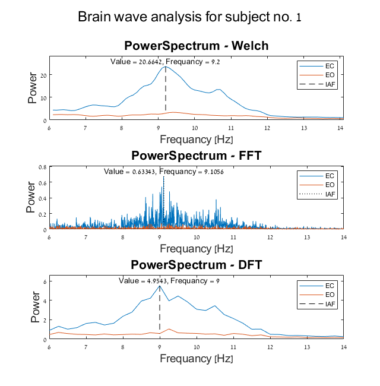
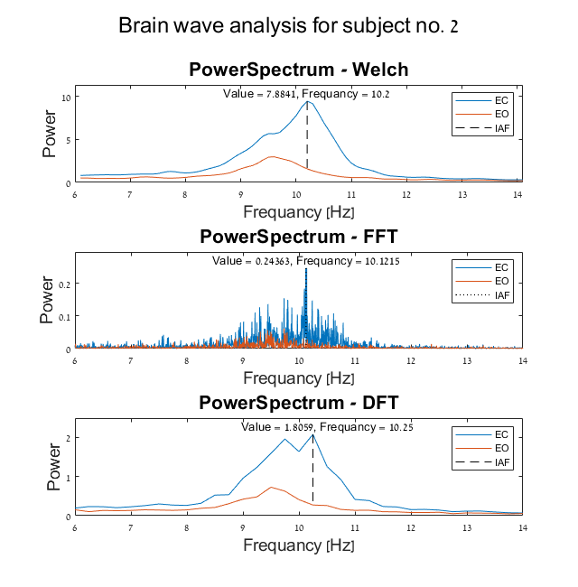
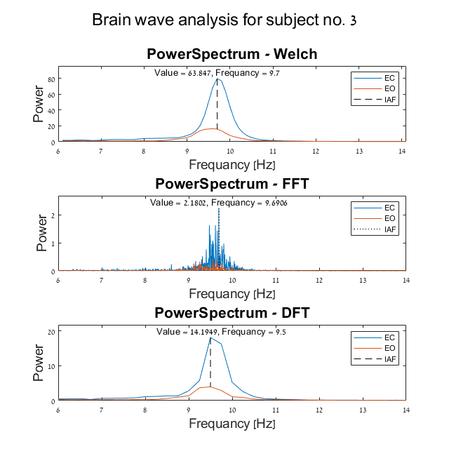

Contents
clear; close all; clc;
Load data
InitialData = dir('..\DATA_DIR\**\*.edf');
Experiment parameters
fs = 256;
Hz = 6:0.1:14;
window = 4*fs;
channel = 19;
Experiment data structures
Data = struct();
emptyCellArr = {};
DataEO = struct('name', emptyCellArr,...
'hdr', emptyCellArr,...
'records', emptyCellArr);
DataEC = struct('name', emptyCellArr,...
'hdr', emptyCellArr,...
'records', emptyCellArr);
O = 1;
C = 1;
deleteAfter = [];
Preprocess loop
for n = 1:length(InitialData)
EOCheck = regexp(InitialData(n).name,'EO');
ECCheck = regexp(InitialData(n).name,'EC');
EDFCheck = regexp(InitialData(n).name,'.edf');
if isempty(EOCheck) && isempty(ECCheck) || isempty(EDFCheck)
deleteAfter(end+1) = n;
continue;
end
Data(n).name = InitialData(n).name;
fullFileName = fullfile(InitialData(n).folder,InitialData(n).name);
[Data(n).hdr, Data(n).records] = edfread(fullFileName, 'targetSignals', channel);
if ~isempty(EOCheck)
DataEO(O) = Data(n);
O = O + 1;
else
DataEC(C) = Data(n);
C = C + 1;
end
end
Data(deleteAfter) = [];
nSubjects = length(DataEC);
Step 1 of 2: Reading requested records. (This may take a few minutes.)...
Step 2 of 2: Parsing data...
Step 1 of 2: Reading requested records. (This may take a few minutes.)...
Step 2 of 2: Parsing data...
Step 1 of 2: Reading requested records. (This may take a few minutes.)...
Step 2 of 2: Parsing data...
Step 1 of 2: Reading requested records. (This may take a few minutes.)...
Step 2 of 2: Parsing data...
Step 1 of 2: Reading requested records. (This may take a few minutes.)...
Step 2 of 2: Parsing data...
Step 1 of 2: Reading requested records. (This may take a few minutes.)...
Step 2 of 2: Parsing data...
Analysis and plotting loop
for n = 1:nSubjects
h = figure('units', 'normalized', 'Position', [0.25 0 0.5 1]);hold on;
h.Name = ['Subject no. ' num2str(n)];
sgtitle(['Brain wave analysis for subject no. ' num2str(n)], 'FontSize', 18);
[WelchEC, WelchEO] = signalWelch(DataEC(n).records, DataEO(n).records, h, window, Hz, fs);
[FFTEC, FFTEO] = signalFFT(DataEC(n).records, DataEO(n).records, h, Hz, fs);
[DFTEC, DFTEO] = signalDFT(DataEC(n).records, DataEO(n).records, h, window, Hz, fs);
end
  